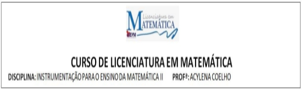

Autores:
Beatriz Rocha
Jair Pereira
Lucas Santos
Paulo Oliveira
Sequência didática: Progressão Aritmética
Introdução
Neste trabalho apresentaremos uma sequencia didática com exemplos de sequências, através da observação de formação das mesmas verão o que varia de um elemento para o outro para descrever o próximo. Através da Sequência de Fibonacci pretendemos mostrar que existem sequências que não podem ser criadas a partir da soma, subtração. Com esta sequencia didática esperamos que os alunos entendam que uma Progressão Aritmética é formada pela adição de um mesmo valor. Para que dominem esse conteúdo serão propostos problemas que desafiem o conhecimento e que tenha algum significado, comprovando que a matemática está ligada a realidade de todos e que é possível aplicá-la à prática.
Desenvolvimento
1º PARTE:
SEQUÊNCIAS NUMÉRICAS
HABILIDADES: Reconhecer, classificar e representar uma sequência numérica; ler e interpretar a linguagem numérica; fazer a identificação e reconhecer numa sequência a organização de uma P.A.
OBJETIVOS: Identificar regularidades em sequências e expressá-las algebricamente; identificar as sequências como Progressões Aritméticas.
PRÉ-REQUISITOS: Operações básicas com números reais.
DURAÇÃO PREVISTA: 100 minutos.
MATERIAIS NECESSÁRIOS; Folhas de atividades, livro didático, lápis e caneta.
ORGANIZAÇÃO DA TURMA: Individual
DESCRITOR ASSOCIADO:
H41 – Identificar a expressão algébrica que expressa uma regularidade observada em sequências de números.
METODOLOGIA ADOTADA:
Através de atividades, realizarão tarefas passo a passo, montando sequências e observando as mesmas reconhecerão as sequências que podem ser criadas a partir da soma, subtração, multiplicação e divisão de um determinado valor.
ATIVIDADE 1
SEQUÊNCIA NUMÉRICA
São conjuntos em que os elementos se sucedem, obedecendo a uma determinada ordem.
- Vamos montar algumas sequências. Os termos das sequências serão obtidos por uma adição, subtração, multiplicação ou divisão do número dado.
 Sequência 1 +5
Sequência 1 +5
(3, ___, ___, ___, ___, ___, ____, ____, ____, ____)
 Sequência 2 -3
Sequência 2 -3
(7, ___, ___, ___, ___, ___, ___, ___, ___, ___, ___)
 Sequência 3 +0
Sequência 3 +0
(8, ___, ___, ___, ___, ___, ___, ___, ___, ___, ___)
- Observe as sequências e complete-as:
Sequência 1: (6, 11, 16, 21, 26, 31, ___)
Sequência 2: (-35, -30, -25, ___)
Sequência 3: (8, 8, 8, ___)
- Dentre as sequências de 1 a 3, qual atende a característica citada.
a) Os termos são formados por adição de um número positivo.
___________________________________________________
b) Os termos são formados por adição de um número negativo.
___________________________________________________
c) Os termos são formados por adição de nenhum numero.
___________________________________________________
O numero que somamos ou subtraímos de uma sequencia é chamado razão. Uma sequencia pode ser classificada de 3 formas de acordo com a razão:
Crescente: r > 0
Constante: r = 0
Decrescente: r < 0
REFERÊNCIAS